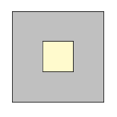
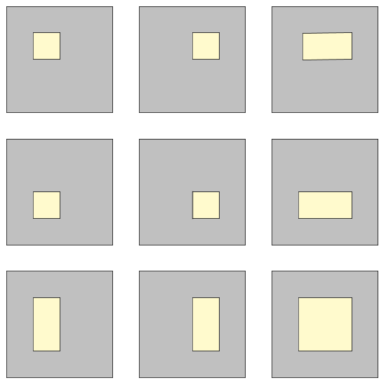

Assuming that two points are chosen randomly (with uniform distribution ) within a rectangle, it is possible to determine the expected value of the distance between these two points.
For example, the expected distance between two random points in a unit square is about $0.521405$, while the expected distance between two random points in a rectangle with side lengths $2$ and $3$ is about $1.317067$.
Now we define a hollow square lamina of size $n$ to be an integer sized square with side length $n \ge 3$ consisting of $n^2$ unit squares from which a rectangle consisting of $x \times y$ unit squares ($1 \le x,y \le n - 2$) within the original square has been removed.
For $n = 3$ there exists only one hollow square lamina:

For $n = 4$ you can find $9$ distinct hollow square laminae, allowing shapes to reappear in rotated or mirrored form:

Let $S(n)$ be the sum of the expected distance between two points chosen randomly within each of the possible hollow square laminae of size $n$. The two points have to lie within the area left after removing the inner rectangle, i.e. the gray-colored areas in the illustrations above.
For example, $S(3) = 1.6514$ and $S(4) = 19.6564$, rounded to four digits after the decimal point.
Find $S(40)$ rounded to four digits after the decimal point.
dev: solve(n=3) → █
main: solve(n=40) → █
extra: solve(n=50) → █
Solution pending... the mathematician is still thinking.
Nothing here yet - come back when the dust has settled.